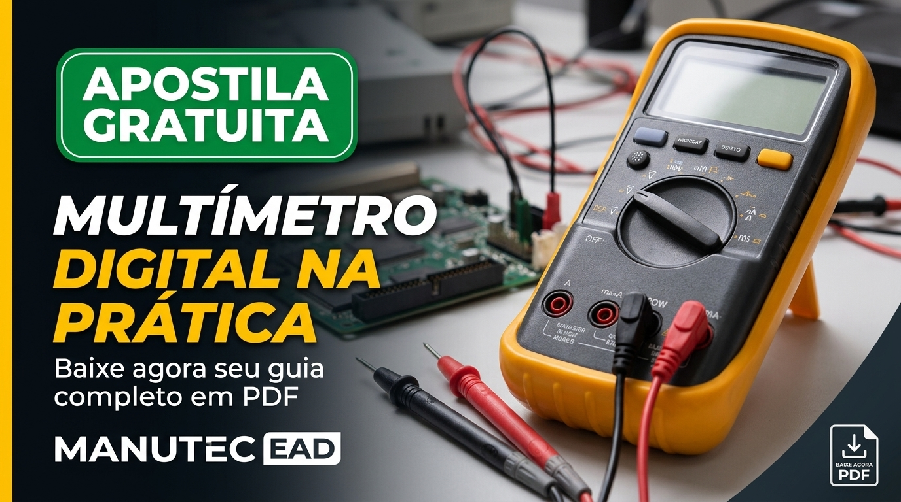
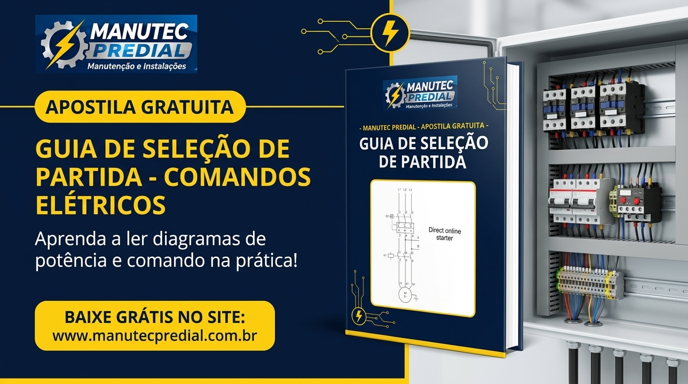

Multímetro Digital na Prática
Aprenda de forma simples e segura a utilizar o multímetro digital na bancada e em campo para realizar medições elétricas e eletrônicas com precisão.

Aprenda de forma simples e segura a utilizar o multímetro digital na bancada e em campo para realizar medições elétricas e eletrônicas com precisão.
Material didático gratuito da Manutec EAD. Medições elétricas devem seguir sempre os procedimentos de segurança aplicáveis.

Aprenda a interpretar diagramas de potência e comando, identificar componentes e conhecer cinco configurações de partida direta para motores trifásicos.
Material didático gratuito da Manutec EAD. Montagens e testes elétricos devem seguir os procedimentos de segurança aplicáveis.